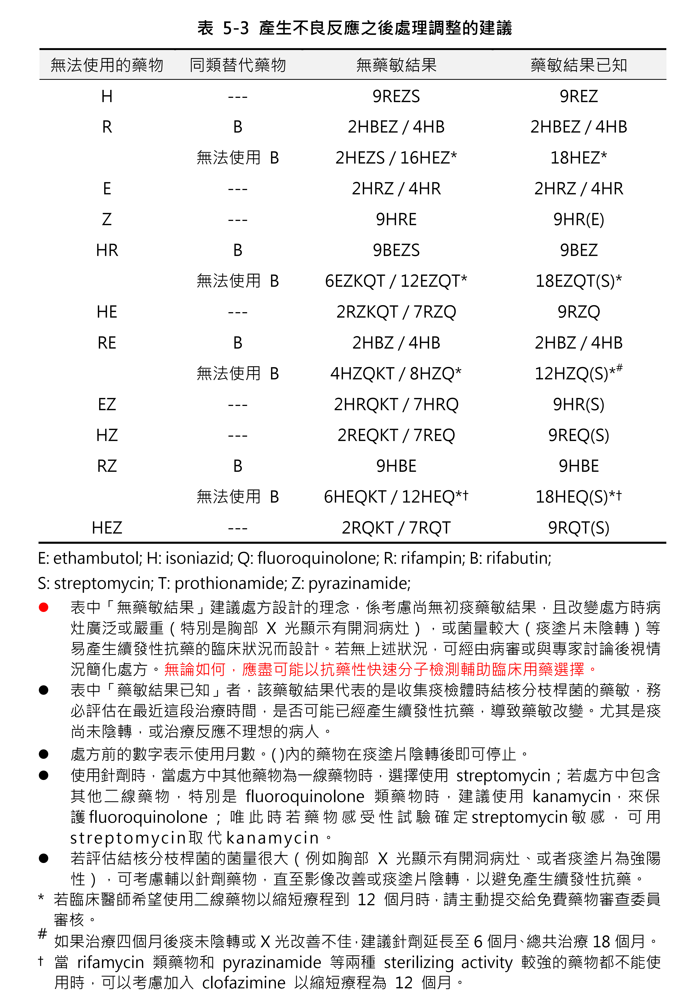

肺結核治療附加參考
表 5-1、5-2、5-3 與表 6-4；供醫療專業人員快速查閱。
表 5-1 藥物性肝炎逐日漸進加藥流程建議
| 天數 | 藥物 | 劑量 | 肝功能檢測 |
|---|---|---|---|
| 0 | - | - | 建議檢測 |
| 1 | INH | 100 mg/day | |
| 2 | INH | 200 mg/day | |
| 3-5 | INH | full dose | 建議檢測 |
| 6 | + RMP | 150 mg/day | |
| 7 | + RMP | 300 mg/day | |
| 8-10 | + RMP | full dose | 建議檢測 |
| 11 | + PZA | 250 mg/day | |
| 12 | + PZA | 500 mg/day | |
| 13 | + PZA | full dose | 建議檢測 |
肝功能檢測建議包含 ALT、AST、total bilirubin；逐一加藥期間可同時使用足量 EMB。嚴重藥物性肝炎或合併黃疸者，成功加回 INH、RMP 後不建議嘗試加入 PZA。
表 5-2 皮疹的逐日處理方法建議
| 天數 | 藥物 | 劑量 |
|---|---|---|
| 0 | - | - |
| 1 | INH | 50 mg/day |
| 2 | INH | 100 mg/day |
| 3 | INH | 300 mg/day |
| 4 | + RMP | 150 mg/day |
| 5 | + RMP | 300 mg/day |
| 6 | + RMP | full dose |
| 7 | + EMB | 200 mg/day |
| 8 | + EMB | 400 mg/day |
| 9 | + EMB | full dose |
| 10 | + PZA | 250 mg/day |
| 11 | + PZA | 500 mg/day |
| 12 | + PZA | full dose |
表 5-3 產生不良反應之後處理調整的建議

點選圖片可開啟原尺寸。
表 6-4 藥物交互作用
表格較長，以下保留疾管署指引原表版面；點選各頁可放大。
資料來源：衛生福利部疾病管制署《結核病診治指引》第八版，第五、六章。